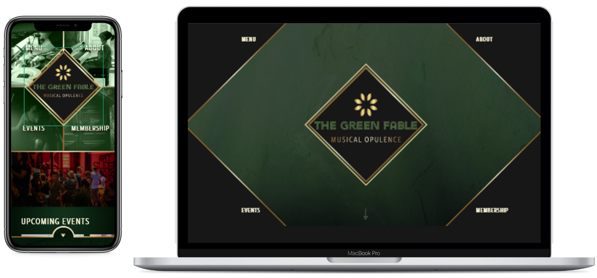
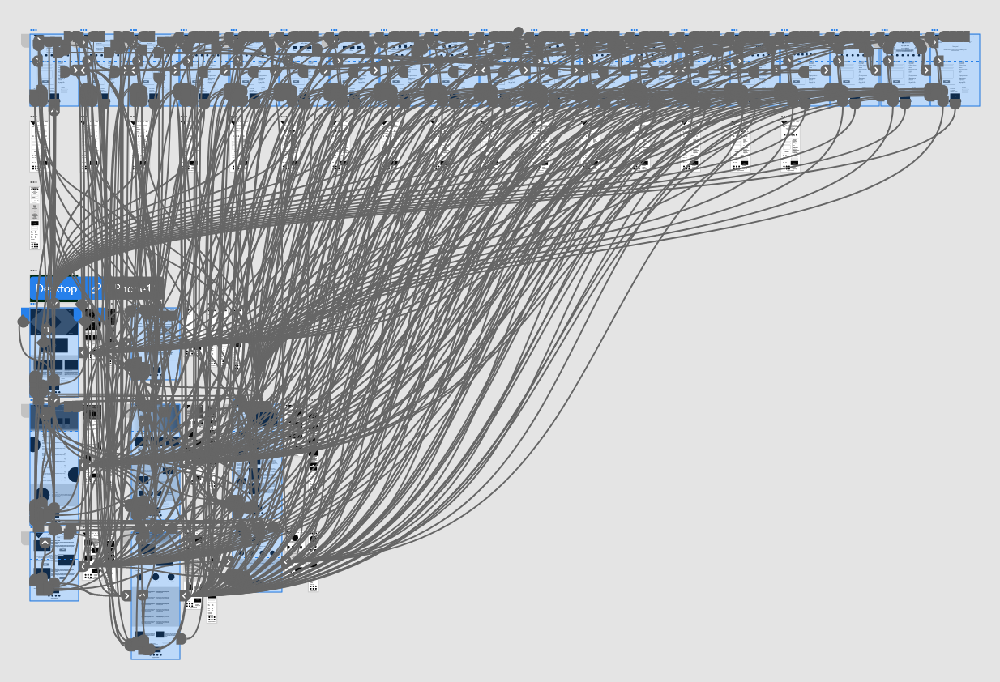

UX Case Study: The Green Fable Responsive Website
New Tools
The purpose of this project was to introduce the class to Adobe XD as well as the concept of a responsive website design. Working from the graceful degredation or top-down design strategy, I was to create a website that offered a feedback flow for a piano lounge. My background as a pianist drew me to this specific prompt, and I was excited to start the process for a new type of product design.
Thinking outside the box
Doing my initial research and asking people I knew some questions about their behaviours when reviewing websites, I found that many people feel that websites that held their own review processes were unstrustworthy because the company could potentially alter their review if it was negative. Additionally, people do not typically leave reviews unless they have a very strong opinion one way or another.
Taking these views into account, the fictional company I was creating needed to ease user trust as well as create an incentive to get more reviews form users.
The initial challenges brought up by research and trying to come up with multiple design ideas for a common product, a club/restaurant website meant that I had to employ a new creative strategy to help get my brain started. This is where the "How Might We" exercise came into play.
Avoiding Bias
Once I decided that my piano lounge company was going to be an upscale club offering exclusive membership perks, I needed to create the personas who would attend this club. I created two to cover a couple demographics I thought would attend such a club, but because all of the people who I interviewed in my first research phase fit into only the first persona, Julia, I opted to use her as the user I was designing for to be able to base my decisions on real data.
Maps, maps, maps!
A user journey map was the first way I analyzed the potential website could be used to solve Julia's problem statement. I wrote out a process that began with The Green Fable website, allowed her to submit a review, and then to copy that exact review to another website to boost trust and to receive a coupon incentive in return. Each step evaluated her feelings and any opportuniy for improvement.
Next, it was time to plan the site map and infrastructure of the company website. I decided what pages were necessary for this company based on a competitive assessment of a few other existing piano lounges, an upscale hotel website, a country club website, and an upscale nightclub website.
Time Intensive
This website had 9 major pages to design. Besides needing options during crazy 8s, I additionally laid out each refined sketch wireframe for a tablet size and mobile on graph paper. Luckily, I felt mobile was very easy to keep things in a single column layout for the most part, as this is the most common layout for mobile sites and also the easiest to navigate.
Each paper wireframe was then transferred to the digital space on Adobe XD, where the designs were made to be a bit higher fidelity than my previous project. There were certainly more labels, which I hoped would help my users in my first usability study once the prototype was all connected.
In-Depth Review
Building out the reveiw process required more screens to cover all the aspects that a user might want to review. There were two paths through a review, one via a membership number for club members, and one through a receipt number. The concept was to allow entrees, musical guests, and servers to be pre-populated for a review for the user's convenience. this allows for star rating reviews as the fastest and easiest method with the option of adding comments. As the screends in the flow were connected and then subsequently had the navigation elements connected, this made the low-fi prototype highly functional and looking more complicated than it actually was.
Important Reminders
Participants in the usability studies found nothing wrong with the flow, but did mention where it was difficult to realize that there was content below the fold or where the ability to skip questions were not clear. Additionally, I needed work on some of the labels to make things more clear and consistent through all pages.
Interestingly, I did run into an issue with the functionality of hover states in XD that I researched to find was a problem for several other designers that Adobe has yet to address. This opened my eyes to some of the limitations software might have to design certain features. Certain behaviors would need to be customized by engineers during the development phase.
Personal Rewards
My favorite page that I designed was the menu page. It had a video as the background with some featured drinks in the foreground making the page look much more alive. I found some great stock images that fit well for menu items and the head chef. I was able to utilize some of my photo manipulation skills to get exactly the look I was going for and change some of the colors in stock images to match the website. I also felt that the landing page for the website was a unique design.
I received positive feedback about the flow of the reviews, that it was very thorough and the fact that it was combided with the contact form on the same page made it feel more trustworthy. I was also pleased tat the additional comment that a user wished iw as a real piano lounge, because the website made it look like a really cool place.
Going forward, I would make a better design system for typography with a plan in advance to be comre consistent. I think this would be better for developers. Also, I feel the need to learn more about auto-resizeing and stacks in Adobe to be even more efficient with this software, particularly with the responsive design aspect for different sized screens.
 Try the high-fidelity prototype yourself
View complete project slide deck
Try the high-fidelity prototype yourself
View complete project slide deck